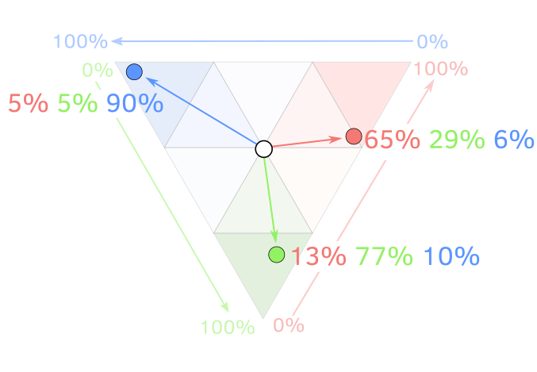

Часто електоральну географію України звужують лише до відмінностей між кількома регіонами – наприклад, Сходом і Заходом. Таке спрощення проводить штучні кордони. Водночас, справжня картина значно цікавіша.
Рекомендуємо переглядати проект на моніторі.
Тож давайте роздивимося деталі і подивимось поведінку виборців у різних регіонах.
Ось як виглядає знайомий всім загальнонаціональний контекст: традиційно високий рівень підтримки національно-демократичних сил на Заході й у Центрі, проросійських та комуністичних – на Сході та Півдні. Але чи так усе в дійсності?
Ми розділили всі партії, які брали участь у парламентських виборах 2006-2019 років, на три типи:
- національно-демократичні (типові приклади: Наша Україна, Свобода)
- проросійські або комуністичні (Партія Регіонів, КПУ)
- популістські (БЮТ, Слуга народу).
Уявімо політичні уподобання виборців у вигляді умовного трикутника, де синій кут позначає національно-демократичні сили, червоний кут — проросійські та комуністичні партії, зелений — популістські. Будь-яке співвідношення голосів виборців за ці три типи політсил можна закодувати точкою на цьому трикутнику. Наприклад, якщо виборці віддали кожному типу політсил по 33.3%, ми отримаємо позицію в середині трикутника (біла точка в центрі). Таке буває рідко: скоріше за все, якісь сили матимуть більшу підтримку – тоді точка зміститься, відповідно, у напрямку синього, зеленого або червоного кута.

Саме ці відхилення від «центру»для кожної дільниці на виборах до ВР позначені на карті лініями-стрілками, де початок лінії — центр трикутника. Що вищий відсоток голосів за конкретний тип сил, то довшою і більш направленою у відповідний кут є лінія. Для швидкого ознайомлення ви можете орієнтуватись просто за кольором.
Загалом як нахил, так і колір ліній показують пропорцію голосів, які отримали партії цих трьох напрямків: нахил ліворуч, «на захід», і сині стрілки – це націонал-демократичні партії; нахил праворуч, «на схід», і червоні – це проросійські; нахил вниз, зелені,– це популісти. Перемикайтесь між роками, щоб порівняти результати виборів. Карту можна зумити кнопками +/- у лівому верхньому куті карти. Одна лінія — одна виборча дільниця.
Інтерактивна карта дає змогу виявити райони та міста, які голосують не так, як їхні регіони. Інколи це лише тимчасові електоральні успіхи якоїсь із партій на одних виборах, які зникають на наступних. Водночас, чимало локацій в Україні мають довготривалі особливості політичних поглядів.
Якщо ж агрегувати дані дільниць до рівня міст та районів, то можна виокремити ці патерни більш наочно.
Не лише Схід та Захід
Протягом 2006-2019 років три галицькі області (Львівська, Івано-Франківська та Тернопільська) і дві донбаські (Донецька та Луганська) мали найменші внутрішні відмінності в підтримці партій.
Водночас деякі інші області мали більші відмінності в електоральних уподобаннях між районами, ніж окремі області між собою.
Можливо, питання електоральних уподобань стосуються місцевих політичних еліт і мобілізації електорату на місцях. Ці питання є невивченими в Україні.
Мовні, етнічні, соціально-економічні змінні також не мають пояснювальної сили для багатьох конкретних випадків, коли ми бачимо різницю виборчої поведінки міст та районів в одному регіоні.
Наприклад, у Харківській та Кіровоградській областях у великих містах проживає більше етнічних росіян та російськомовних, проте на виборах 2006-2012 рр. ми можемо побачити, що Кропивницький і Світловодськ (Кіровоградська область), так само як Харків і Люботин, віддали більше голосів за проукраїнські політичні сили, ніж у середньому по цих областях
Якщо подивитися на графіки по областях, ви можете помітити, що місто Горішні Плавні (колишній Комсомольськ) в 2006-2019 не слідувало електоральному повороту Полтавської області, а було найбільш «про-регіоналівським». Можливо, це пояснюється тим, що місто створили в радянський час як супутник великого заводу «Полтавський гірничо-збагачувальний комбінат», і туди на заклик радянської влади приїхало багато комсомольців-добровольців, в тому числі і з Росії. Газета «Комсомольская правда» 6 січня 1961 року писала: «Існує місто Комсомольск-на-Амурі, з'явиться місто Комсомольск-на-Дніпрі», після чого почалася кампанія з переїзду молоді на цю нову новобудову століття.
А місто Нікополь, навпаки, в 2006-2012 роках стійко демонструвало найвищу підтримку «національно-демократичних» сил у Дніпропетровській області.
Місто Славутич (будувалося для родин працівників ЧАЕС, етнічний склад: українці — 44,3 %; росіяни — 45,8 %; білоруси — 4,8 % ) Київської області в 2006-2012 роках теж випало з обласного тренду й підтримувало Партію регіонів.
Місто Южноукраїнськ (як і в Славутичі, тут живуть люди, які працюють на АЕС – Піденно-Українській. Етнічний склад: українці — 73,9 %; росіяни — 21,7 %; білоруси — 0,7 %;) у Миколаївській області в 2006-2014 роках стабільно показує найвищий рівень підтримки «національно-демократичних» сил в області.
Недригайлівський район, де народився Віктор Ющенко, теж рекордно підтримував Нашу Україну в Сумській області в 2002-2007 рр.
Нижче розташовані графіки для районів та міст по кожній області. Перемикайте роки, шукайте потрібні міста. Графіки згруповані по схожості голосувань в областях.
Методологія
Ми прирівняли виборчі дільниці 2006-2007 року до уніфікованих номерів, які запровадили на виборах 2012 року, за адресою та охопленою територією. Більшість роботи була проведена вручну, за допомогою наших невтомних інтернів. В результаті ми встановили відповідники для понад 90% виборчих дільниць, що дає змогу порівняти результати голосування по роках для майже 30 тисяч дільниць.
Більшість партій в Україні важко назвати ідеологічними. Класифікація на основі програм партій ненадійна, бо задеклароване в програмах часто відрізняється від їхніх дій; а своїми загальними формулюваннями вони не дуже відрізняються одна від одної. Часто проросійськість партії проявляється лише з часом, під час голосування за важливі законопроєкти, як от продовження базування Чорноморського флоту в Криму, мовні питання тощо.
За нашою грубою оцінкою, партії можна розбити на три групи:
Національно-демократичні: «Наша Україна», Блок «Наша Україна – Народна Самооборона», Український Народний Блок Костенка і Плюща, «Громадянський блок ПОРА-ПРП», УДАР, ВО «Свобода», Народний Фронт, Блок Петра Порошенка, «Самопоміч», Громадянська позиція Гриценка, Заступ, Правий сектор, Європейська солідарність, Голос, Українська стратегія Гройсмана.
Проросійські або комуністичні: Партія регіонів, Соціалістична партія України, Комуністична партія України, Блок Наталії Вітренко «Народна опозиція», «Народний блок Литвина», Партія «Віче», «Опозиційний блок НЕ ТАК!», «Блок Литвина», Прогресивна соціалістична партія України, Партія Наталії Королевської «Україна – Вперед!», Опозиційний блок, «Сильна Україна» Сергія Тігіпка, Опозиційна платформа – ЗА ЖИТТЯ, Опозиційний блок, Партія Шарія.
Популістські: «Блок Юлії Тимошенко», «Батьківщина», Радикальна Партія Олега Ляшка, «Слуга народу», «Сила і честь».
Над проєктом працювали: Микола Добиш, Анатолій Бондаренко, Євгенія Дроздова, Надя Кельм, а також Єлизавета Доронцева, Ганна Аргірова, Наталя Кіндратів, Аліна Дзюбко.